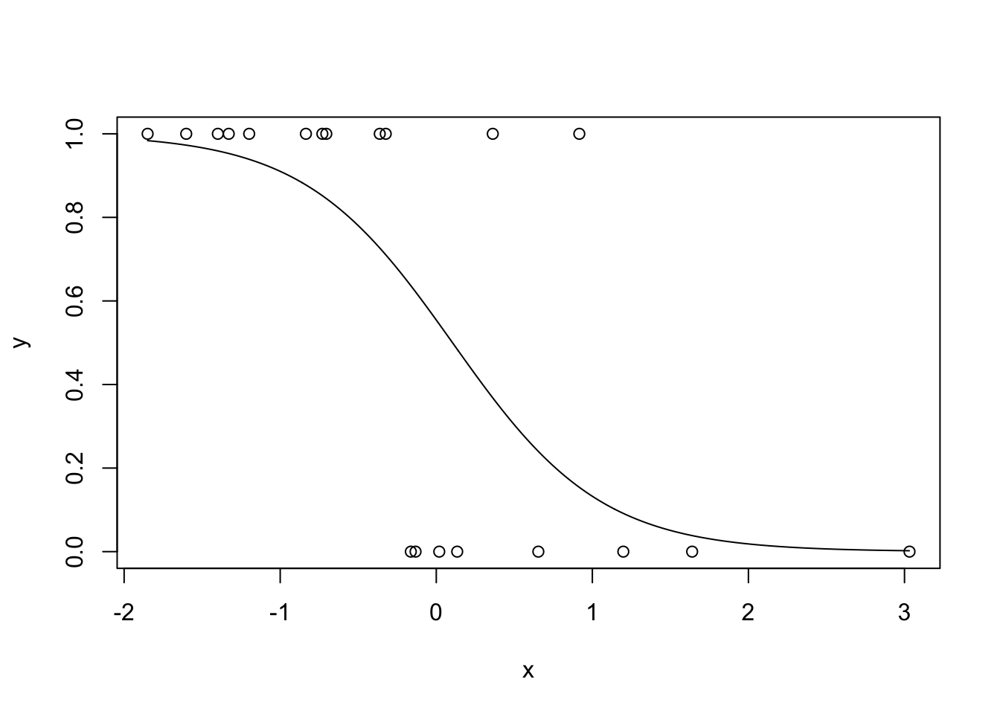
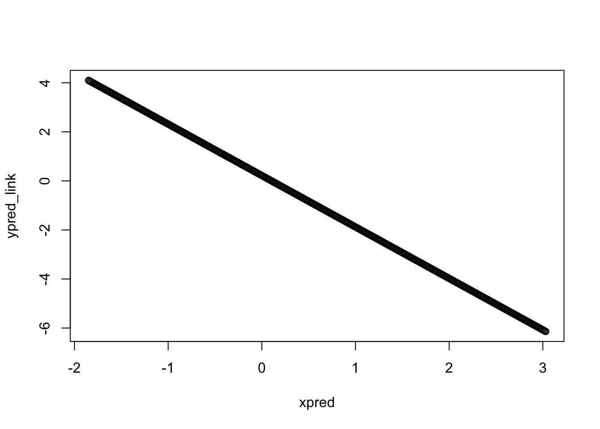

18 Path Coefficients
18.1 1.1 Unstandardized and Standardized Coefficients
Path (or regression) coefficients are the inferential engine behind structural equation modeling, and by extension all of linear and even some non-linear statistics (as we shall see). They relate changes in the dependent variable \(y\) to changes in the independent variable \(x\), and thus act as a measure of association. In fact, you may recall from the chapter on Global Estimation that, under specific circumstances, path coefficients can be expressed as (partial) correlations, which all scientists are familiar with as a unitless measure of association. They also allow us to generate predictions for new values of \(x\) and thus are useful in testing and extrapolating model results.
There are two kinds of regression coefficients: unstandardized, or raw coefficients, and standardized coefficients.
Unstandardized coefficients are the easiest to derive as they are the default values returned by all statistical programs. In short, they reflect the expected (linear) change in the response with each unit change in the predictor. For a coefficient value \(\beta = 0.5\), for example, a 1 unit change in \(x\) there is, on average, an 0.5 unit change in \(y\).
In models with more than one independent variable (e.g., \(x1\), \(x2\), etc), the coefficient reflects the expected change in \(y\) given the other variables in the model. This implies that the effect of one particular variable controls for the presence of other variables, generally by holding them constant at their mean. This is why such coefficients are referred to as partial regression coefficients, because they reflect the independent (or partial) contributions of any particular variable.
One tricky aspect to interpretation involves transformations. When the log-transformation is applied, for example, the relationships between the variable are no longer linear. This means that we have to change our interpretation slightly. When \(y\) is log-transformed, the coefficient \(\beta\) is interpreted as a 1 unit change in \(x\) leads to a \((exp(\beta) - 1) \times 100%\) change in \(y\). Oppositely, when the independent variable \(x\) is log-transformed, \(\beta\) is interpreted as a 1% change in \(x\) leads to a \(\beta\) increase in \(y\). Finally, when both are transformed, both are expressed in percentages: a 1% change in \(x\) leads to a \((exp(\beta) - 1) \times 100%\) change in \(y\). Transformations often confound intrepretation, so it is worth mentioning.
In contrast, standardized coefficients are expressed in equivalent units, regardless of the original measurements. Often these are in units of standard deviations of the mean (scale standardization) but, as we shall see shortly, there are other possibilities. The goal of standardization is to increase comparability. In other words, the magnitude of standardized coefficients can be directly compared to make inferences about the relative strength of relationships.
In SEM, it is often advised to report both unstandardized and standardized coefficients, because they present different and mutually exclusive information. Unstandardized coefficients contain information about both the variance and the mean, and thus are essential for prediction. Along these lines, they are also useful for comparing across models fit to the same variables, but using different sets of data. Because the most common form of standardization concerns scaling by the sample standard deviations, data derived from different sources have different sample variances and their standardized coefficients are not immediately comparable.
Unstandardized coefficients are also most related to the phenomenon of interest in the units that are relevant to the outcome. Imagine telling someone that 1 standard deviation change in nutrient input levels would result in a 6 standard deviation change in water quality. That might seem impressive until it becomes clear that the size of the dataset has reduced the sample variance, and the absoluty relationship reveals only a very tiny change in water quality with each unit change in nutrient levels. Not so impressive anymore.
In contrast, standardized effects are useful for comparing the relative magnitude of change associated with different paths in the same model. Care should be taken not to interpret these relationships as the ‘proportion of variance explained’ but rather in terms of relative influence on the mean of the response.
By extension, standardization is necessary to compare indirect or compound effects among different paths in the same model. This is because those paths could be measured in very different units. For example, comparing the relative effect of direct vs. indirect pathways in a partially-mediated model.
In contrast, comparing the strength of indirect or compound effects across the same path in different models requires unstandardized coefficients, due to the issue of different sample variances raised above. Comparing the same path across different models using standardiezd coefficients would require a demonstration that the sample variances are not significantly different (or that the entire population has been sampled).
Thus, both standardized and unstandardized coefficients have their place. Let’s now explore some of the different forms of standardization, and how they can be achieved.
18.2 1.2 Scale Standardization
The most typical implementation of standardization is placing the coefficients in units of standard deviations of the mean. This is accomplished by scaling the coefficient \(\beta\) by the ratio of the standard deviation of \(x\) over the standard deviation of \(y\):
\[b = \beta*\left( \frac{sd_x}{sd_y} \right)\]
This coefficient has the interpretation that, for a 1 standard deviation change in \(x\), we expect a \(b\) unit standard deviation change in \(y\).
This standardization can be achieved by Z-transforming the raw data, in which case \(b\) is the (partial) correlation between \(x\) and \(y\) (see Chapter: Global Estimation). Scaling the raw data by subtracting the mean and dividing by the standard deviation lends this standardization its name.
Both lavaan and piecewiseSEM return scale-standardized coefficients. lavaan requires a different set of functions or arguments, while piecewiseSEM will do it by default using the functions coefs. coefs has the added benefit in that it can be called on any model object, not just an SEM.
Let’s run an example:
## This is lavaan 0.6-3## lavaan is BETA software! Please report any bugs.##
## This is piecewiseSEM version 2.1.0
##
##
## If you have used the package before, it is strongly recommended you read Section 3 of the vignette('piecewiseSEM') to familiarize yourself with the new syntax
##
## Questions or bugs can be addressed to <LefcheckJ@si.edu>set.seed(6)
data <- data.frame(y = runif(100), x = runif(100))
xy_model <- lm(y ~ x, data = data)
# perform manual standardization
beta <- summary(xy_model)$coefficients[2, 1]
(beta_std <- beta * (sd(data$x)/sd(data$y)))## [1] 0.09456659## Response Predictor Estimate Std.Error DF Crit.Value P.Value Std.Estimate
## 1 y x 0.0922 0.098 98 0.9404 0.3493 0.0946
##
## 1# and with lavaan
xy_formula <- 'y ~ x'
xy_sem <- sem(xy_formula, data)
standardizedsolution(xy_sem)## lhs op rhs est.std se z pvalue ci.lower ci.upper
## 1 y ~ x 0.095 0.099 0.956 0.339 -0.099 0.288
## 2 y ~~ y 0.991 0.019 52.991 0.000 0.954 1.028
## 3 x ~~ x 1.000 0.000 NA NA 1.000 1.000## lavaan 0.6-3 ended normally after 11 iterations
##
## Optimization method NLMINB
## Number of free parameters 2
##
## Number of observations 100
##
## Estimator ML
## Model Fit Test Statistic 0.000
## Degrees of freedom 0
##
## Parameter Estimates:
##
## Information Expected
## Information saturated (h1) model Structured
## Standard Errors Standard
##
## Regressions:
## Estimate Std.Err z-value P(>|z|) Std.lv Std.all
## y ~
## x 0.092 0.097 0.950 0.342 0.092 0.095
##
## Variances:
## Estimate Std.Err z-value P(>|z|) Std.lv Std.all
## .y 0.090 0.013 7.071 0.000 0.090 0.991In all 3 cases, we have achieved a scale-standardized coefficient of \(b = 0.095\). Thus, a 1 SD change in \(x\) would result in a 0.095 SD change in \(y\).
18.3 1.3 Range Standardization
An alternative to scale standardization is ‘relevant range’ standardization. This approach scales the coefficients over, as the name implies, some relevant range. Typically this is the full range of the data, in which case \(\beta\) can be standardized as follows:
\[b = \beta * \frac{max(x) - min(x)}{max(y) - min(y)}\]
The interpretation for the coefficient would then be the expected proportional shift in \(y\) along its range given a full shift along its range by \(x\).
At first, this might seem like a strange form of standardization, but it makes perfect sense in certain cases. For example, consider a binary predictor: 0, 1. In such a case, the relevant range-standardized coefficient is the expected shift in \(y\) given the shift from one state (0) to another (1). Or consider a management target such as decreasing nutrient runoff by 10%. Would reducing fertilizer application by 10% of its range yield a 10% reduction in runoff? Such expressions are the currency of some, more applied realms.
Perhaps the best application of relevant ranges is in comparing coefficients within a model: rather than dealing in somewhat esoteric quantities of standard deviations, relevant range standardization simply asks which variable causes a greater shift in \(y\) along its range. This is a much more digestable concept to most scientists. It may even provide a more fair comparison across the same paths fit to different datasets, if the ranges are roughly similar and/or encompassed in the others.
For a worked example, we have now entered fully into the realm of piecewiseSEM–it does not appear as if lavaan has integrated this functionality a of yet. Let’s attempt to scale the results by hand, then compare to the output from coefs with the argument standardize = "range":
## [1] 0.09806703## Response Predictor Estimate Std.Error DF Crit.Value P.Value Std.Estimate
## 1 y x 0.0922 0.098 98 0.9404 0.3493 0.0981
##
## 1In both cases, we obtain a \(b = 0.0981\) suggesting that a full shift in \(x\) along its range would only result in a shift of 10% along the range of \(y\).
Both scale and relevant range-standardization only apply when the response is normally-distributed. If not, we must make some assumptions in order to obtain standardized coefficients. Let’s start with binomial responses.
18.4 1.4 Binomial Response Models
Binomial responses are those that are binary (0, 1) such as success or failure, present or absent, and so on. What is unique about them is that they do not have a linear relationship with a predictor \(x\). Instead, they are best modeled using a sigmoidal curve. To demonstrate, let’s generate some data, fit a binary model, and plot the predicted relationship:
set.seed(44)
x <- rnorm(20)
x <- x[order(x)]
y <- c(rbinom(10, 1, 0.8), rbinom(10, 1, 0.2))
glm_model <- glm(y ~ x, data = data.frame(x = x, y = y), "binomial")
xpred <- seq(min(x), max(x), 0.01)
ypred <- predict(glm_model, list(x = xpred), type = "response")
plot(x, y)
lines(xpred, ypred)
Clearly these data are not linear, and modeling them as such would violate the assumptions of the test. Instead, as you can see, we instead fit them to a binomial distribution using a generalized linear model (GLM).
GLMs consist of three parts: (1) the random component, or the expected values of the response based on their underlying distribution, (2) the systematic component that represents the linear combination of predictors, and (3) the link function, which links the expected values of the response (random component) to the linear combination of predictors (systematic component).
Basically, the link functions take something inherently non-linear and attempts to linearize it. This can be shown by plotting the predictions on the link-scale:

Note how the line is no longer sigmoidal, but straight!
For binomial responses, there are two kinds of link functions: logit and probit. We’ll focus on the logit link for now because its more common. With this link, the coefficients are in units of logits or the log odds ratio, which reflect the log of the probability of observing an outcome (1) relative to the probability of not observing it (0).
Often these coefficients are reverted to just the odds ratio by taking the exponent, which yields the proportional change in the probablity observing one outcome (1) with a unit change change in the predictor.
Say, for example, we have a coefficient \(\beta = -0.12\). A 1 unit change in \(x\) would result in \(exp(-0.12) = 0.88 \times 100%\) or 88% reduction in the odds of observing the outcome.
The problem is that (log) odds ratios themselves are not comparable across models, and its unclear how they might be standardized, since the coefficient is on the link (linear) scale, while the only variance we can compute is from the raw data, which is on the non-linear scale. Thus, we need to find some sway to obtain estimates of variance on the same scale as the coefficient.
One approach is to consider that for every value of \(x\), there is an underlying probability distribution of observing a 0 or a 1. The mean of these distributions is where a particular outcome is most likely. Let’s say at low values of \(x\) we observe 0, at at high values of \(x\) we observe 1. If we order \(x\), the mean probabilities give rise to a linear increase in observing 1 with increasing \(x\). Here is an illustration of this phenomenon (from Long 1997):
latent propensity
This linear but latent variable, which we call \(y^*\), is therefore related to the observed values of \(x\) through a vector of linear coefficients \(\beta\) as in any other linear model:
\[y^*_{i} = x_{i}\beta + \epsilon_{i}\]
The problem is, we can never observe this linear underlying or latent propensity, and so we must approximate it. At some value of \(x\), this probability is evenly split at 50/50: we call this cutpoint \(\tau\). Below \(\tau\) we are more likely to observe 0 in our example, while above \(\tau\) we are more likely to observe 1. We can relate \(y\) to \(y^*\) based on whether the observed values fall above or below this cutpoint.
Since latent variables are unobserved, we must also make some assumptions about their error variance. In the chapter on Latent Variable Modeling, we often fixed their error variance to 1. In this case, there are theoretically-derived error variances depending on the distribution and the link function: for the probit link, the error variance \(\epsilon = 1\), while for the logit link, \(\epsilon = \pi^2/3\), both for the binomial distribution.
Regardless of the type of standardization, we need to know about the range or variance of the response. With our knowledge of \(y^*_{i}\) and the theoretical error variances, we have all the information needed to compute the variance on the link (linear) scale.
The variance in \(y^*\) is the sum of the variance of the predictions (on the linear scale) plus the theoretical error variance. For a logit link, then:
\[\sigma_{y^*_{i}}^2 = \sigma_{x\beta}^2 + \pi^2/3\]
The square-root of this quantity gives the standard deviation of \(SD_{y^*}\) on the linear scale for use in scale standardization, or alternately, the range of \(y^*\) to use in relevant range standardization.
There is an alternate method to the ‘latent theoretic approach’, which relies on the proportion of variance explained, or \(R^2\). Here, we can express the \(R^2\) as the variance of the predicted values (on the non-linear scale) over the variance of the observed values (also on the non-linear scale):
\[R^2 = \frac{\sigma_{\hat{y}}^2}{\sigma_{y}^2}\]
We can obtain the variance of the observed values as the variance of the predicted values (on the linear scale) over the value of \(R^2\). The standard deviation, of course, is the square-root of this value.
This method, called the observation-empirical approach, does not require the acknowledgement of any latent variables or theoretical error variances, but does require an acceptance of this is a valid measurement of \(R^2\) (which some consider it not, as GLM estimation is based on deviance, not variance, and thus this statistic is not equivalent). It also does not provide a measure of the range of \(y\) although we can assume, based on sampling theory, that is \(6 * \sigma_{y}\).
Let’s revisit our earlier GLM example and construct standardized coefficients:
# get beta from model
beta <- summary(glm_model)$coefficients[2, 1]
preds <- predict(glm_model, type = "link") # linear predictions
# latent theoretic
sd.ystar <- sqrt(var(preds) + (pi^2)/3) # for default logit-link
beta_lt <- beta * sd(x)/sd.ystar
# observation empirical
R2 <- cor(y, predict(glm_model, type = "response"))^2 # non-linear predictions
sd.yhat <- sqrt(var(preds)/R2)
beta_oe <- beta * sd(x)/sd.yhat
# obtain using `coefs`
coefs(glm_model, standardize.type = "latent.linear"); beta_lt## Response Predictor Estimate Std.Error DF Crit.Value P.Value Std.Estimate
## 1 y x -2.0975 0.9664 18 -2.1703 0.03 -0.8122
##
## 1 *## [1] -0.8121808## Response Predictor Estimate Std.Error DF Crit.Value P.Value Std.Estimate
## 1 y x -2.0975 0.9664 18 -2.1703 0.03 -0.6566
##
## 1 *## [1] -0.6565602We see that both approaches produce coefficients, and they are the same as returned by the coefs function in piecewiseSEM (with the appropriate argument).
You’ll note that the observation-empirical approach yields a smaller coefficient than the latent-theoretic. This is because the former approach is influenced by the fact that it is based on the relationship between a linear approximation (predictions) of a non-linear variable (raw values), introducing a loss of information. The latent theoretic approach also suffers from a loss of information from use of a distribution-specific but theoretically-derived error variance, which may or may not approach the true error variance (which is unknowable). Either way, both kinds of standardization are not without their drawbacks, but both provide potentially useful information in being able to compare linear and now linearized standardized coefficients.
18.5 1.5 Scaling to Other Non-Normal Distributions
As it turns out, the latent-theoretic approach has one further benefit: we can extend it to other distributions (as they all have their own theoretical error variances) and mixed-effects models where we must also incorporate the random components.
[content to come]
18.6 References
Grace, J. B., Johnson, D. J., Lefcheck, J. S., & Byrnes, J. E. (2018). Quantifying relative importance: computing standardized effects in models with binary outcomes. Ecosphere, 9(6), e02283.
Scott Long, J. (1997). Regression models for categorical and limited dependent variables. Advanced quantitative techniques in the social sciences, 7.